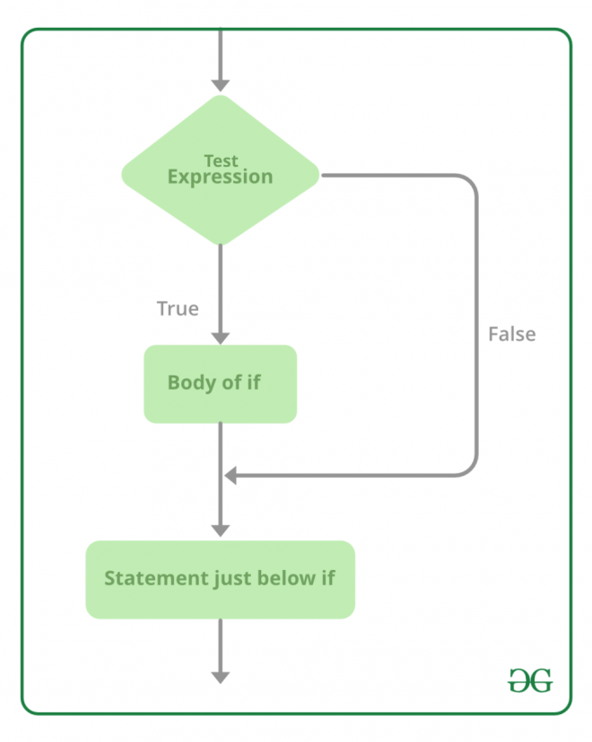

|  |
If statement is used to check a condition checking if the conditions is true or false. If the condition is true, the code inside the if statement gets executed; if it is false, the code will not be execute and it will continue with the next condition. |
if ($x==0) { // condition 1
echo $x; //instruction 1
}
if ($x==0) { //condition 1
echo $x; //instruction 1
} else { //alternative 1
$x = $x * $x; //instruction 2
echo $x; //instruction 3
}
if ($x==0) { //condition 1
echo $x; //instruction 1
} else if($x>0) { //condition 2
$x = $x * $x; //instruction 2
echo $x; //instruction 3
} else { //alternative 1
$x = $x + $x; //instruction 4
echo $x; //instruction 5
}